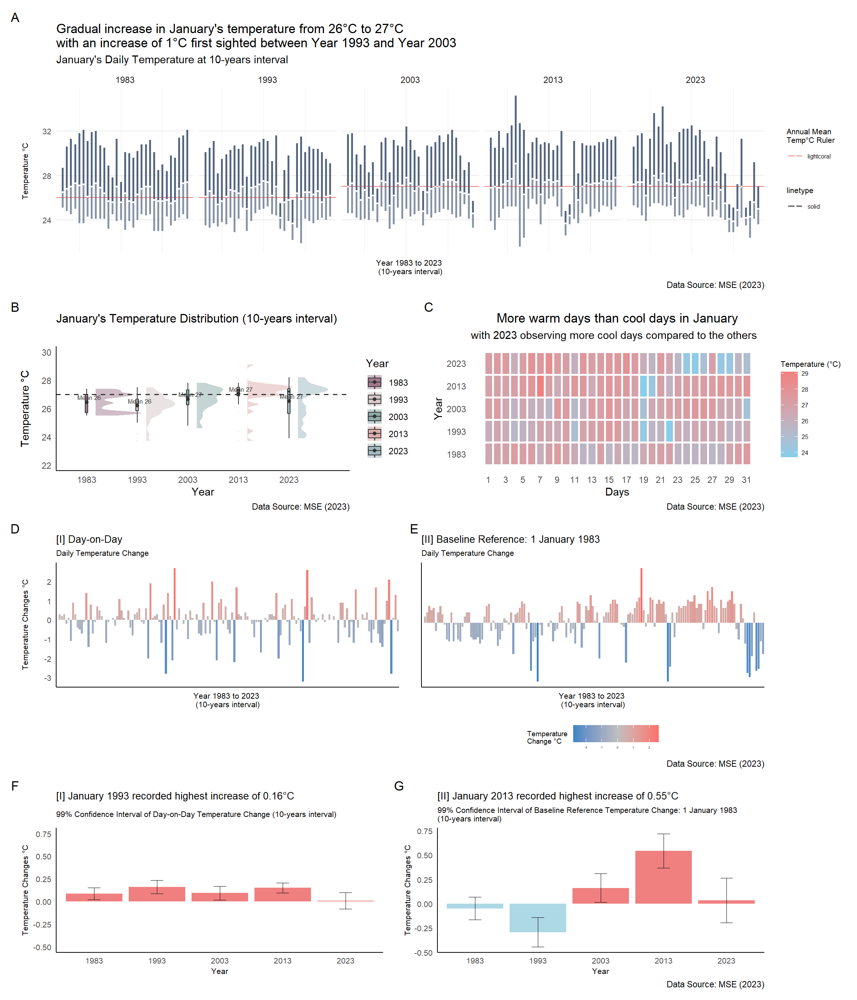

Show code
pacman::p_load(tidyverse, readr, knitr, dplyr, ggplot2, plotly, ggiraph, gganimate, GGally,
crosstalk, ggdist, ggthemes, patchwork, DT, ungeviz, scales, lubridate)Be Weatherwise or Otherwise
National Climate Change Secretariat Singapore’s website quoted an infographic prepared by Ministry of Sustainability and the Environment (MSE) and stated some of the following insights in the infographic below.
The daily mean temperature are projected to increase by 1.4 to 4.6.
The difference between the wet months (November to January) and the dry month (February and June to September) is expected to be more noticeable.

The objective of this project focuses on the insights on climate change in Singapore and aims to explore visual interactivity and visualising uncertainty methods to validate the abovementioned claims by:
The project uses p_load() of pacman package to check if the R packages are installed in the computer.
The following code chunk is used to install and launch the R packages.
pacman::p_load(tidyverse, readr, knitr, dplyr, ggplot2, plotly, ggiraph, gganimate, GGally,
crosstalk, ggdist, ggthemes, patchwork, DT, ungeviz, scales, lubridate)The dataset source obtained is from Meteorological Service Singapore. There are five data files (in .csv format): January of 1983, 1993, 2003, 2013 and 2023, used for this project to examine the temperature over the “five decades” for Changi Weather Station.
The code chunk below uses guess_encoding() to check the .csv file encoding to prepare for merging of the five datasets.
# check .csv file encoding
guess_encoding("data/DAILYDATA_S24_202301.csv")# A tibble: 3 × 2
encoding confidence
<chr> <dbl>
1 UTF-8 0.8
2 ISO-8859-1 0.48
3 ISO-8859-2 0.27The code chunk below uses list.files() and map() to read .csv files. bind_rows() is then used to combine the five datasets into one data frame.
# set file path to extract .csv files
files <- list.files(path = "data/", pattern = ".csv", full.names = TRUE)
# read csv files with encoding
read_csv_with_encoding <- function(file, encoding) {
readr::read_csv(file, locale = readr::locale(encoding = encoding), show_col_types = FALSE)
}
# read all CSV files into a list
data_list <- map(files, ~ read_csv_with_encoding(.x, encoding = "ISO-8859-1"))
# combine into 1 df
combined_data <- bind_rows(data_list)The combined data consists of 155 observations and 19 variables. Each row describes the daily weather in terms of its rainfall, temperature and windspeed.
str() to check the structure of the combined data.str(combined_data, 10)spc_tbl_ [155 × 19] (S3: spec_tbl_df/tbl_df/tbl/data.frame)
$ Station : chr [1:155] "Changi" "Changi" "Changi" "Changi" ...
$ Year : num [1:155] 1983 1983 1983 1983 1983 ...
$ Month : num [1:155] 1 1 1 1 1 1 1 1 1 1 ...
$ Day : num [1:155] 1 2 3 4 5 6 7 8 9 10 ...
$ Daily Rainfall Total (mm) : num [1:155] 0.3 0.4 2.9 0 0 0 22.3 0 0 8.3 ...
$ Highest 30 Min Rainfall (mm) : chr [1:155] "\u0097" "\u0097" "\u0097" "\u0097" ...
$ Highest 60 Min Rainfall (mm) : chr [1:155] "\u0097" "\u0097" "\u0097" "\u0097" ...
$ Highest 120 Min Rainfall (mm): chr [1:155] "\u0097" "\u0097" "\u0097" "\u0097" ...
$ Mean Temperature (°C) : num [1:155] 26.5 26.8 27 27.3 27.1 27.2 26.1 27 27.3 26.9 ...
$ Maximum Temperature (°C) : num [1:155] 28.7 30.6 31.3 30.8 31.8 32.1 31.1 31.9 32 30.7 ...
$ Minimum Temperature (°C) : num [1:155] 25.1 24.8 24.5 25 23.7 23.7 24.3 24.1 24.1 24.1 ...
$ Mean Wind Speed (km/h) : num [1:155] 5.5 9.4 10.7 12.6 10.3 8.4 9.8 11.4 11.2 12.5 ...
$ Max Wind Speed (km/h) : num [1:155] 29.9 43.2 42.8 42.1 34.6 32.4 38.5 40 35.6 48.6 ...
$ Highest 30 min Rainfall (mm) : num [1:155] NA NA NA NA NA NA NA NA NA NA ...
$ Highest 60 min Rainfall (mm) : num [1:155] NA NA NA NA NA NA NA NA NA NA ...
$ Highest 120 min Rainfall (mm): num [1:155] NA NA NA NA NA NA NA NA NA NA ...
$ Mean Temperature (°C) : num [1:155] NA NA NA NA NA NA NA NA NA NA ...
$ Maximum Temperature (°C) : num [1:155] NA NA NA NA NA NA NA NA NA NA ...
$ Minimum Temperature (°C) : num [1:155] NA NA NA NA NA NA NA NA NA NA ...
- attr(*, "spec")=
.. cols(
.. Station = col_character(),
.. Year = col_double(),
.. Month = col_double(),
.. Day = col_double(),
.. `Daily Rainfall Total (mm)` = col_double(),
.. `Highest 30 Min Rainfall (mm)` = col_character(),
.. `Highest 60 Min Rainfall (mm)` = col_character(),
.. `Highest 120 Min Rainfall (mm)` = col_character(),
.. `Mean Temperature (°C)` = col_double(),
.. `Maximum Temperature (°C)` = col_double(),
.. `Minimum Temperature (°C)` = col_double(),
.. `Mean Wind Speed (km/h)` = col_double(),
.. `Max Wind Speed (km/h)` = col_double()
.. )
- attr(*, "problems")=<externalptr> However, the combined dataset reveals additional (duplicated) columns were created when combining the five datasets.
duplicate() to check for duplicates:combined_data[duplicated(combined_data),]# A tibble: 0 × 19
# ℹ 19 variables: Station <chr>, Year <dbl>, Month <dbl>, Day <dbl>,
# Daily Rainfall Total (mm) <dbl>, Highest 30 Min Rainfall (mm) <chr>,
# Highest 60 Min Rainfall (mm) <chr>, Highest 120 Min Rainfall (mm) <chr>,
# Mean Temperature (°C) <dbl>, Maximum Temperature (°C) <dbl>,
# Minimum Temperature (°C) <dbl>, Mean Wind Speed (km/h) <dbl>,
# Max Wind Speed (km/h) <dbl>, Highest 30 min Rainfall (mm) <dbl>,
# Highest 60 min Rainfall (mm) <dbl>, Highest 120 min Rainfall (mm) <dbl>, …The above output shows that there is no duplicated rows found in the dataset.
The flowchart diagram below provides an overview of the key variables used in this project.
flowchart TD A(Key Variables Used) A --> B(Raw Variables) A -.-> C(New Variables Created) B --> D(Year) B --> E(Month) B --> F(Day) B --> G(Temperature) G --> H(Mean) G --> I(Maximum) G --> J(Minimum) C -.-> K(Date) C -.-> L(Daily Temperature Changes) L -.-> M(Day-on-day) L -.-> N(Baseline reference: 1 January 1983)
The code chunk below creates na_indices to resolve the issue of duplicated column and NA values issue from merging of the five .csv files.
# Replace NA values for columns
na_indices <- which(is.na(combined_data$`Highest 30 Min Rainfall (mm)`))
combined_data$`Highest 30 Min Rainfall (mm)`[na_indices] <- combined_data$`Highest 30 min Rainfall (mm)`[na_indices]
na_indices <- which(is.na(combined_data$`Highest 60 Min Rainfall (mm)`))
combined_data$`Highest 60 Min Rainfall (mm)`[na_indices] <- combined_data$`Highest 60 min Rainfall (mm)`[na_indices]
na_indices <- which(is.na(combined_data$`Highest 120 Min Rainfall (mm)`))
combined_data$`Highest 120 Min Rainfall (mm)`[na_indices] <- combined_data$`Highest 120 min Rainfall (mm)`[na_indices]
na_indices <- which(is.na(combined_data$`Mean Temperature (°C)`))
combined_data$`Mean Temperature (°C)`[na_indices] <- combined_data$`Mean Temperature (°C)`[na_indices]
na_indices <- which(is.na(combined_data$`Maximum Temperature (°C)`))
combined_data$`Maximum Temperature (°C)`[na_indices] <- combined_data$`Maximum Temperature (°C)`[na_indices]
na_indices <- which(is.na(combined_data$`Minimum Temperature (°C)`))
combined_data$`Minimum Temperature (°C)`[na_indices] <- combined_data$`Minimum Temperature (°C)`[na_indices]The code chunk below selects the variables intended to be used for this project.
weather <- combined_data %>%
select(Year, Month, Day, `Daily Rainfall Total (mm)`, `Mean Temperature (°C)`, `Maximum Temperature (°C)`,
`Minimum Temperature (°C)`, `Mean Wind Speed (km/h)`, `Max Wind Speed (km/h)`)The code chunk below creates a new variable date by using mutate() and make_date().
weather <- weather %>%
mutate(Date = make_date(Year, Month, Day)
)# calculate min, max, median for annotation
min_temp <- round(min(weather$`Minimum Temperature (°C)`), 0)
max_temp <- round(max(weather$`Maximum Temperature (°C)`), 0)
mean_temp <- round(mean(weather$`Mean Temperature (°C)`), 0)
med_temp <- round(median(weather$`Mean Temperature (°C)`), 0)
q75_temp <- round(quantile(weather$`Mean Temperature (°C)`, 0.75))
q25_temp <- round(quantile(weather$`Mean Temperature (°C)`, 0.25))
mean_temp1983 <- round(mean(na.omit(weather$`Mean Temperature (°C)`)[weather$Year == 1983], 0))
min_temp1983 <- round(min(na.omit(weather$`Minimum Temperature (°C)`)[weather$Year == 1983], 0))
max_temp1983 <- round(max(na.omit(weather$`Maximum Temperature (°C)`)[weather$Year == 1983], 0))
mean_temp1993 <- round(mean(na.omit(weather$`Mean Temperature (°C)`)[weather$Year == 1993], 0))
min_temp1993 <- round(min(na.omit(weather$`Minimum Temperature (°C)`)[weather$Year == 1993], 0))
max_temp1993 <- round(max(na.omit(weather$`Maximum Temperature (°C)`)[weather$Year == 1993], 0))
mean_temp2003 <- round(mean(na.omit(weather$`Mean Temperature (°C)`)[weather$Year == 2003], 0))
min_temp2003 <- round(min(na.omit(weather$`Minimum Temperature (°C)`)[weather$Year == 2003], 0))
max_temp2003 <- round(max(na.omit(weather$`Maximum Temperature (°C)`)[weather$Year == 2003], 0))
mean_temp2013 <- round(mean(na.omit(weather$`Mean Temperature (°C)`)[weather$Year == 2013], 0))
min_temp2013 <- round(min(na.omit(weather$`Minimum Temperature (°C)`)[weather$Year == 2013], 0))
max_temp2013 <- round(max(na.omit(weather$`Maximum Temperature (°C)`)[weather$Year == 2013], 0))
mean_temp2023 <- round(mean(na.omit(weather$`Mean Temperature (°C)`)[weather$Year == 2023], 0))
min_temp2023 <- round(min(na.omit(weather$`Minimum Temperature (°C)`)[weather$Year == 2023], 0))
max_temp2023 <- round(max(na.omit(weather$`Maximum Temperature (°C)`)[weather$Year == 2023], 0))The code chunk below calculates two new variables (temp_dod and tempdiff_since1983) on temperature changes.
Day-on-day temperature change
Temperature baseline reference as 1 January 1983
# 1 Jan 1983 temperature
first_record <- weather %>%
summarize(first_temp = weather$`Mean Temperature (°C)`[1])
dod <- weather %>%
arrange(Year, Day) %>%
group_by(Year) %>%
mutate(tempdiff_since1983 =
lag(`Mean Temperature (°C)`, 0) - first_record$first_temp,
tempdiff_since1983_cat = ifelse(tempdiff_since1983 >= 0, "Temperature Increase", "Temperature Decrease"))
# Day-on-day changes
dod <- dod %>%
arrange(Year, Day) %>%
group_by(Year) %>%
mutate(temp_dod =
`Mean Temperature (°C)` - lag(`Mean Temperature (°C)`),
temp_dod_cat = ifelse(temp_dod >= 0, "Temperature Increase", "Temperature Decrease"))
dod$temp_dod <- round(dod$temp_dod, digits = 2)
dod$tempdiff_since1983 <- round(dod$tempdiff_since1983, digits = 2)Final checks for missing values of the weather dataset revealed two missing observations from variables Mean Wind Speed and Max Wind Speed are not the main part of the project analysis, the two observations will be kept.
The code chunk below uses colSums(is.na()) to check for missing values for all columns.
colSums(is.na(dod)) Year Month Day
0 0 0
Daily Rainfall Total (mm) Mean Temperature (°C) Maximum Temperature (°C)
0 0 0
Minimum Temperature (°C) Mean Wind Speed (km/h) Max Wind Speed (km/h)
0 0 0
Date tempdiff_since1983 tempdiff_since1983_cat
0 0 0
temp_dod temp_dod_cat
5 5 An analytics-driven data visualisation prepared below shows the temperature changes in Singapore, particularly Changi weather station at 10-years interval. Given the objective of this project, various appropriate interactive techniques will be explored to enhance user experience in data discovery and storytelling with data visualisation.
# patchwork - data visualisation
c / (b | heat) / (p1 | p2) / (gg_point1 | gg_point2) +
plot_annotation(tag_levels = 'A') +
plot_layout(widths = c(2,2),
heights = c(4,3,3,3))
Before proceeding with data visualisation, it is essential to be able to navigate the dataset of 155 observations with ease. This segment will help users identify or navigate through the dataset observations instead of scrolling through each observation one-by-one. The interactive datatable is created using DT package.
dod1 <- dod %>%
select(Year, Month, Day, Date, `Mean Temperature (°C)`, `Maximum Temperature (°C)`, `Minimum Temperature (°C)`,
`Baseline Temperature Change (°C)` = tempdiff_since1983, `Daily Temperature Change (°C)` = temp_dod
) %>%
mutate(Year = as.factor(Year),
Day = as.factor(Day)
)
DT::datatable(dod1, class= "compact",
filter = "top", # filter individual column is diff from search entire table function
extensions = c("Buttons"),
options = list(pageLength = 5,
columnDefs = list(list(targets = "_all", className = "dt-center")), # text align center
buttons = c("colvis", "excel", "csv", "print"),
dom = "Bpiltf"),
caption = "Table 1: Daily Temperature Records (1983, 1993, 2003, 2013, 2023)")Below is a quick visual summary method into the distribution and correlation between the respective variables, before delving deep into the respective visualisations.
dodcorr <- weather %>%
mutate(Year = as.factor(Year),
Day = as.factor(Day)
)
corr <- dodcorr[, c(1, 4, 5, 8)]
a <- ggpairs(corr,
mapping = aes(color = corr$Year),
title = "Correlation of Weather Dataset Variables",
rowLabels = c('Year', 'Rainfall', 'Temperature', 'Wind'),
columnLabels = c('Year', 'Rainfall', 'Temperature', 'Wind'),
upper = list(continuous = "density", combo = wrap("box_no_facet", alpha = 0.4)),
lower = list(continuous = "points", combo = wrap("dot_no_facet", alpha = 0.4)))
ggplotly(a) +
scale_fill_manual(values = c("#a2798f", "#d6c7c7", "#8caba8",
"#ddadad", "#9fb9bf"), name = "Year")NULLWeather distribution of Changi Weather Station will be studied across the “five-decades” with the use of:
Interactive Raincloud Plot
Interactive Barchart
This segment will allow users to explore the distribution of January’s daily temperatures by Year (at 10-years interval).
b1 <- weather %>%
plot_ly(type = 'violin',
color = ~as.factor(Year),
colors = yearly_color) %>%
add_trace(
x = ~Year,
y = ~`Mean Temperature (°C)`,
side = 'positive',
box = list(
visible = T
),
meanline = list(
visible = T
),
points = 'all',
pointpos = ~`Mean Temperature (°C)`,
jitter = 0,
scalemode = 'count',
meanline = list(
visible = T
),
marker = list(
line = list(
width = 1
),
symbol = 'line-ns'
)
) %>%
# add horizontal line
add_segments(
x = 1980, xend = 2025, y = mean_temp, yend = mean_temp,
line = list(
color = "black", alpha = 0.5, width = 0.25
),
showlegend = FALSE
) %>%
layout(
title = "Temperature Distribution (10-years interval)",
plot.title = element_text(hjust = 0.5),
xaxis = list(
title = "Year",
tickvals = list("1983", "1993", "2003", "2013", "2023")
),
yaxis = list(
title = "Temperature °C"
),
violingap = 5, violingroupgap = 10, violinmode = 'overlay',
# add caption
annotations = list(
text = "Data Source: MSE (2023)", xref = "paper", yref = "paper",
x = 1.2, y = -0.1, showarrow = FALSE, font = list(size = 10)
)
)
b1# Raincloud Plot
b <- ggplot(weather, aes(x = as.factor(Year), y = `Mean Temperature (°C)`,
fill = as.factor(Year))) +
stat_halfeye(
adjust = 0.5,
justification = -0.2,
.width = 0,
point_colour = NA,
alpha = 0.5) +
geom_boxplot(width = 0.05,
outlier.colour="lightcoral",
outlier.shape=16,
outlier.size=0.05,
outlier.alpha = 0.5) +
stat_summary(fun.y = mean, geom = "point", colour = "grey20") +
stat_summary(fun = mean, geom = "text",
aes(label = paste("Mean", round(after_stat(y), ))),
position = position_nudge(x = 0.05), vjust = -0.5, size=2.2,
colour = "grey20") +
scale_fill_manual(values = c("#a2798f", "#d6c7c7", "#8caba8",
"#ddadad", "#9fb9bf"), name = "Year") +
geom_hline(aes(yintercept= mean_temp),
color="grey20", linewidth=0.7, linetype="dashed") +
labs(title = "January's Temperature Distribution (10-years interval)",
y = "Temperature °C", x = "Year",
caption = "Data Source: MSE (2023)") +
theme_minimal() +
scale_y_continuous(limits = c(22, 30)) +
theme(plot.title = element_text(size = 12),
panel.grid = element_blank(),
axis.line.x = element_line(),
axis.line.y = element_line(),
legend.position = "right")This segment will display the trend (and fluctuation) of daily temperatures at 10-years interval.
ci <- ggplotly(c, tooltip = "text") %>%
layout(
margin = list( l = 50, r = 50, b = 100, t = 50),
# add caption
annotations = list(
text = "Data Source: MSE (2023)", xref = "paper", yref = "paper",
x = 1, y = -0.1, showarrow = FALSE, font = list(size = 10)))
ci# Bar chart
tooltip_max <- paste("<b>", weather$Date, "</b>",
"\nMax Temp : ", weather$`Maximum Temperature (°C)`, "°C",
"\nMean Temp : ", weather$`Mean Temperature (°C)`, "°C")
tooltip_min <- paste("<b>", weather$Date, "</b>",
"\nMean Temp : ", weather$`Mean Temperature (°C)`, "°C",
"\nMin Temp : ", weather$`Minimum Temperature (°C)`, "°C")
tooltip_mean <- paste("<b>", weather$Date, "</b>",
"\nMax Temp : ", weather$`Maximum Temperature (°C)`, "°C",
"\nMean Temp : ", weather$`Mean Temperature (°C)`, "°C",
"\nMin Temp : ", weather$`Minimum Temperature (°C)`, "°C")
c <- ggplot(weather) +
geom_hline(aes(
yintercept = ifelse(Year == "1983", mean_temp1983, NA),
color="lightcoral", linetype="solid")) +
geom_hline(aes(
yintercept = ifelse(Year == "1993", mean_temp1993, NA),
color="lightcoral", linetype="solid")) +
geom_hline(aes(
yintercept = ifelse(Year == "2003", mean_temp2003, NA),
color="lightcoral", linetype="solid")) +
geom_hline(aes(
yintercept = ifelse(Year == "2013", mean_temp2013, NA),
color="lightcoral", linetype="solid")) +
geom_hline(aes(
yintercept = ifelse(Year == "2023", mean_temp2023, NA),
color="lightcoral", linetype="solid")) +
geom_segment(data = weather,
aes(x = Day, y = `Mean Temperature (°C)`,
xend=weather$Day, yend = weather$`Maximum Temperature (°C)`,
text = tooltip_max),
color= "#556681", size = 1) +
geom_segment(data = weather,
aes(x = Day, y = `Mean Temperature (°C)`,
xend=weather$Day, yend = weather$`Minimum Temperature (°C)`,
text = tooltip_min),
color= "#556681", size = 1, alpha = 0.7) +
geom_point(aes(x = Day, y = `Mean Temperature (°C)`), size = 0.5, color="white", show.legend = TRUE) +
labs(title = "Gradual increase in January's temperature from 26°C to 27°C \nwith an increase of 1°C first sighted between Year 1993 and Year 2003",
subtitle = "January's Daily Temperature at 10-years interval",
x = "Year 1983 to 2023 \n(10-years interval)", y = "Temperature °C",
color = "Annual Mean \nTemp°C Ruler",
caption = "Data Source: MSE (2023)") +
theme_minimal() +
theme(panel.grid.minor.y = element_blank(),
panel.grid.major.x = element_blank(),
legend.title = element_text(size = 8),
legend.text = element_text(size = 6),
axis.text.y = element_text(size = 8),
axis.title.y = element_text(size = 8),
axis.text.x = element_blank(),
axis.title.x = element_text(size = 8)) +
facet_wrap(vars(Year), ncol = 5)This segment allow users to visualise time-series data displayed over a date dimension to identify patterns or anomalies.
# Convert ggplot to plotly (to include custom tooltip)
heat_plotly <- ggplotly(heat, tooltip = "text")
# Add caption
heat_plotly <- heat_plotly %>% layout(
annotations = list(
text = "Data Source: MSE (2023)",
x = 1.1,
y = -0.2,
showarrow = FALSE,
xref = "paper",
yref = "paper"
)
)
heat_plotly# calendar heatmap
tooltip_main <- paste("<b>", weather$Date, "</b>",
"\nMax Temp : ", weather$`Maximum Temperature (°C)`, "°C",
"\nMean Temp : ", weather$`Mean Temperature (°C)`, "°C",
"\nMin Temp : ", weather$`Minimum Temperature (°C)`, "°C")
heat <- ggplot(weather,
aes(x = Day, y = Year, fill = `Mean Temperature (°C)`)) +
theme_tufte(base_family = "Helvetica") +
scale_fill_gradient(name = "Temperature (°C)",
low = "sky blue",
high = "lightcoral") +
geom_tile(color = "white", size = 1, aes(text = tooltip_main)) +
labs(x = "Days",
y = "Year",
title = "More warm days than cool days in January",
subtitle = "with 2023 observing more cool days compared to the others",
caption = "Data Source: MSE (2023)") +
theme(axis.ticks = element_blank(),
plot.title = element_text(hjust = 0.5),
legend.title = element_text(size = 8),
legend.text = element_text(size = 6)) +
scale_y_continuous(breaks = seq(min(weather$Year), max(weather$Year), by = 10),
labels = seq(min(weather$Year), max(weather$Year), by = 10)) +
scale_x_continuous(breaks = seq(min(weather$Day), max(weather$Day), by = 2),
labels = seq(min(weather$Day), max(weather$Day), by = 2))To gain further insights on the temperature data collected at Changi Weather Station, two new variables are created by calculating the daily temperature changes over the “five-decades”:
Day-on-day temperature change (daily mean temperature minus previous day temperature)
Temperature baseline reference as 1 January 1983 (daily mean temperature minus 1 January 1983’s mean temperature)
The code chunk below calculates two new variables (temp_dod and tempdiff_since1983) on temperature changes.
# 1 Jan 1983 temperature
first_record <- weather %>%
summarize(first_temp = weather$`Mean Temperature (°C)`[1])
dod <- weather %>%
arrange(Year, Day) %>%
group_by(Year) %>%
mutate(tempdiff_since1983 =
lag(`Mean Temperature (°C)`, 0) - first_record$first_temp,
tempdiff_since1983_cat = ifelse(tempdiff_since1983 >= 0, "Temperature Increase", "Temperature Decrease"))
# Day-on-day changes
dod <- dod %>%
arrange(Year, Day) %>%
group_by(Year) %>%
mutate(temp_dod =
`Mean Temperature (°C)` - lag(`Mean Temperature (°C)`),
temp_dod_cat = ifelse(temp_dod >= 0, "Temperature Increase", "Temperature Decrease"))
dod$temp_dod <- round(dod$temp_dod, digits = 2)
dod$tempdiff_since1983 <- round(dod$tempdiff_since1983, digits = 2)This segment show the trend of temperature changes (day-on-day and baseline reference temperature) over the “five-decades”.
girafe(code = print(p1 + p2),
width_svg = 6,
height_svg = 3,
options = list(
opts_hover(css = "fill: #202020;"),
opts_hover_inv(css = "opacity:0.2;")
)
)# barchart - temp difference
tooltip_full <- paste("<b>", dod$Date, "</b>",
"\nMax Temp : ", dod$`Maximum Temperature (°C)`, "°C",
"\nMean Temp : ", dod$`Mean Temperature (°C)`, "°C",
"\nMin Temp : ", dod$`Minimum Temperature (°C)`, "°C",
"\nDaily Temp Change : ", dod$temp_dod, "°C",
"\nTemp Diff since 1983: ", dod$tempdiff_since1983, "°C")
# Daily temperature change (DOD)
p1 <- ggplot(dod) +
aes(x = as.factor(Date), y = temp_dod, fill = temp_dod) +
geom_col_interactive(
aes(tooltip = tooltip_full, data_id = Date)
) +
scale_fill_gradient2(low = "#3D85C6", mid = "grey", high = "#ff6666", midpoint = 0) +
theme_minimal() +
theme(panel.grid = element_blank(),
axis.line.x = element_line(),
axis.line.y = element_line(),
plot.title = element_text(size = 10),
plot.subtitle = element_text(size = 8),
legend.title = element_text(size = 8),
legend.text = element_text(size = 8),
axis.text.y = element_text(size = 8),
axis.title.y = element_text(size = 8),
axis.text.x = element_blank(),
axis.title.x = element_text(size = 8)) +
theme(legend.position="none") +
labs(title = "[I] Day-on-Day",
subtitle = "Daily Temperature Change",
x = "Year 1983 to 2023 \n(10-years interval)", y = "Temperature Changes °C")
# Daily temperature change (DOD) since 1983 (baseline comparison 1 Jan 1983)
p2 <- ggplot(dod) +
aes(x = as.factor(Date), y = tempdiff_since1983, fill = tempdiff_since1983) +
geom_col_interactive(
aes(tooltip = tooltip_full, data_id = Date)
) +
scale_fill_gradient2(low = "#3D85C6", mid = "grey", high = "#ff6666", midpoint = 0) +
theme_minimal() +
theme(panel.grid = element_blank(),
axis.line.x = element_line(),
axis.line.y = element_line(),
plot.title = element_text(size = 10),
plot.subtitle = element_text(size = 8),
legend.title = element_text(size = 7),
legend.text = element_text(size = 3),
legend.position = "bottom",
axis.text.y = element_blank(),
axis.title.y = element_blank(),
axis.text.x = element_blank(),
axis.title.x = element_text(size = 8)) +
labs(title = "[II] Baseline Reference: 1 January 1983",
subtitle = "Daily Temperature Change",
fill = "Temperature \nChange °C",
x = "Year 1983 to 2023 \n(10-years interval)", y = NULL,
caption = "Data Source: MSE (2023)") +
guides(color = guide_legend(override.aes = list(size = 0))) This segment allows users to explore distribution in temperature change of baseline reference (1 January 1983) by Year.
fig2 <- dod %>%
plot_ly(type = 'violin',
color = ~as.factor(Year),
colors = yearly_color)
fig2 <- fig2 %>%
add_trace(
x = ~Year[dod$tempdiff_since1983_cat == 'Temperature Increase'],
y = ~tempdiff_since1983[dod$tempdiff_since1983_cat == 'Temperature Increase'],
legendgroup = 'Temperature Increase',
scalegroup = 'Temperature Increase',
name = 'Temperature Increase',
side = 'positive',
box = list(
visible = T
),
meanline = list(
visible = T
),
color = I("lightcoral")
) %>%
add_trace(
x = ~Year[dod$tempdiff_since1983_cat == 'Temperature Decrease'],
y = ~tempdiff_since1983[dod$tempdiff_since1983_cat == 'Temperature Decrease'],
legendgroup = 'Temperature Decrease',
scalegroup = 'Temperature Decrease',
name = 'Temperature Decrease',
side = 'negative',
box = list(
visible = T
),
meanline = list(
visible = T
),
color = I("sky blue")
) %>%
layout(
title = "Weather Distribution at 10-years interval \nscaled by temperature difference \n(baseline reference as 1 January 1983)",
xaxis = list(title = "Year", range = c(1975, 2030)),
yaxis = list(title = "Temperature Changes °C", zeroline = F),
violingap = 0, violingroupgap = 0, violinmode = 'overlay',
# add caption
annotations = list(
text = "Data Source: MSE (2023)", xref = "paper", yref = "paper",
x = 1, y = -0.35, showarrow = FALSE, font = list(size = 10)
),
legend = list(
tracegroupgap = 0, orientation = "h", # adjust legend position
x = 0.2, y = -0.2
)
)
fig2This segment allows users to interact with the chart which the charts could show potential relationship with a third dimension for comparison. The third dimension is to visualise the scale of difference in terms of size and colour.
plot_ly(data = dod,
x = ~`Mean Temperature (°C)`,
y = ~temp_dod,
size = ~`Mean Temperature (°C)`,
sizes = c(2, 50),
color = ~temp_dod_cat,
colors = c("#3D85C6", "grey", "#ff6666"),
frame = ~factor(Year),
hovertemplate = ~paste(Date,
"<br>Daily Temperature:", `Mean Temperature (°C)`, "°C",
"<br>Changes - Day-on-Day:", temp_dod, "°C",
"<br>Changes - Since 1983-01-01:", tempdiff_since1983, "°C"),
type = 'scatter',
mode = 'markers',
marker = list(opacity = 0.6,
sizemode = 'diameter',
line = list(width = 0.2, color = 'white'))) |>
layout(title = "Temperature Variability in 1983, 1993, 2003, 2013 & 2023",
xaxis = list(title = "Mean Temperature °C"),
yaxis = list(title = "Temperature Changes °C"),
text = "Data Source: MSE (2023)", xref = "paper", yref = "paper",
x = 1.2, y = -0.1,
updatemenus = list(list(type = "dropdown",
xref = "paper",
yref = "paper",
xanchor = "left",
yanchor = "top",
x = 0.04,
y = 0.95,
buttons = list(
list(method = "update",
args = list(
list(y = list(dod$temp_dod)),
list(color = dod$temp_dod_cat),
list(yaxis = list(
title = "Temperature Changes °C - Day-on-Day"))),
label = "Temperature Changes °C - Day-on-Day"),
list(method = "update",
args = list(
list(y = list(dod$tempdiff_since1983)),
list(color = dod$tempdiff_since1983_cat),
list(yaxis = list(
title = "Temperature Changes °C - Baseline Reference"))),
label = "Temperature Changes °C - Baseline Reference")
)
)
)
)The other objective of this project is to apply uncertainty methods to validate the claims made.
Before visualising for uncertainty, visualising variability will allow users to better understand and ascertain the current dataset.
Below is a chart to visualise variability of effects on daily temperature change with baseline reference to 1 January 1983’s mean temperature.
d <- ggplot(dod, aes(tempdiff_since1983, colour = tempdiff_since1983_cat,
group = paste(tempdiff_since1983_cat, as.factor(Year)))) +
geom_density() +
scale_color_manual(name = "Temperature Changes", values = c("skyblue", "lightcoral")) +
theme_minimal() +
theme(panel.grid = element_blank(),
axis.line.x = element_line(),
axis.line.y = element_line(),
plot.title = element_text(size = 10),
plot.subtitle = element_text(size = 8),
legend.title = element_text(size = 7),
legend.text = element_text(size = 5),
axis.text.y = element_text(size = 8),
axis.title.y = element_text(size = 8),
axis.text.x = element_text(size = 8),
axis.title.x = element_text(size = 8)) +
labs(title = "Visualising Variability of Temperature Changes",
subtitle = "January's Temperature Distribution at 10-years interval)",
y = "Probability of Distribution", x = "Temperature Changes °C",
caption = "Data Source: MSE (2023)")
ggplotly(d)Error bar is a line through a point on a graph, parallel to one of the axes (in this case, parallel to y-axis). These bars reveals the uncertainty of data in terms of the value variation from the true error free value. Shorter error bars indicate that values are concentrated and the plotted values are more likely in a reported measurement. Longer error bars will mean that it is less reliable (i.e. error or uncertainty in reported measurement). Confidence interval is set at 99% for this analysis.
girafe(code = print(gg_point1 + gg_point2),
width_svg = 10,
height_svg = 3,
options = list(
opts_hover(css = "fill: #202020;"),
opts_hover_inv(css = "opacity:0.2;")
)
)# error bar
tooltip <- function(y, ymax, accuracy = .01) {
mean <- scales::number(y, accuracy = accuracy)
sem <- scales::number(ymax - y, accuracy = accuracy)
paste("Daily Temperature Changes:", mean, "°C \n(+/-", sem, "°C)")
}
gg_point1 <- ggplot(data=dod,
aes(x = as.factor(Year)),
) +
stat_summary(aes(y = temp_dod,
tooltip = after_stat(
tooltip(y, ymax))),
fun.data = "mean_se",
geom = GeomInteractiveCol,
fill ="lightcoral"
) +
stat_summary(aes(y = temp_dod),
fun.data = mean_se,
geom = "errorbar", width = 0.2, size = 0.2
) +
ylim(-0.5, 0.75) +
theme_minimal() +
theme(panel.grid = element_blank(),
axis.line.x = element_line(),
axis.line.y = element_line(),
plot.title = element_text(size = 10),
plot.subtitle = element_text(size = 8),
legend.title = element_text(size = 7),
legend.text = element_text(size = 5),
axis.text.y = element_text(size = 8),
axis.title.y = element_text(size = 8),
axis.text.x = element_text(size = 8),
axis.title.x = element_text(size = 8)) +
theme(legend.position="none") +
labs(title = "[I] January 1993 recorded highest increase of 0.16°C",
subtitle = "99% Confidence Interval of Day-on-Day Temperature Change (10-years interval)",
x = "Year", y = "Temperature Changes °C")
gg_point2 <- ggplot(data=dod,
aes(x = as.factor(Year)),
) +
stat_summary(aes(y = tempdiff_since1983,
tooltip = after_stat(
tooltip(y, ymax))),
fun.data = "mean_se",
geom = GeomInteractiveCol,
fill = c("lightblue", "lightblue", "lightcoral", "lightcoral", "lightcoral")
) +
stat_summary(aes(y = tempdiff_since1983),
fun.data = mean_se,
geom = "errorbar", width = 0.2, size = 0.2
) +
theme_minimal() +
theme(panel.grid = element_blank(),
axis.line.x = element_line(),
axis.line.y = element_line(),
plot.title = element_text(size = 10),
plot.subtitle = element_text(size = 8),
legend.title = element_text(size = 7),
legend.text = element_text(size = 5),
axis.text.y = element_text(size = 8),
axis.title.y = element_text(size = 8),
axis.text.x = element_text(size = 8),
axis.title.x = element_text(size = 8)) +
theme(legend.position="none") +
labs(title = "[II] January 2013 recorded highest increase of 0.55°C",
subtitle = "99% Confidence Interval of Baseline Reference Temperature Change: 1 January 1983 \n(10-years interval)",
x = "Year", y = "Temperature Changes °C",
caption = "Data Source: MSE (2023)")Changi Weather Station’s January temperature records in 1983, 1993, 2003, 2013 and 2023 observed an increase in its mean temperature from 26°C to 27°C, with an increase of 1°C first sighted between Year 1993 and Year 2003. Temperature fluctuations in Year 2023 observed a more erratic weather pattern as compared to the other years.
The period of higher daily temperature may result in higher daily temperature difference in the next day, and vice versa. Variability of temperature increase changes has higher probability of distribution around 1°C temperature change. On the other hand, variability of temperature decrease changes has relatively flat probability distribution of around -0.5°C temperature change.
The analysis in this project included two different calculation of daily temperature changes (i.e. day-on-day and baseline reference: 1 January 1983), in which there were difference in the analysis results. Observations from interactive error bars (at 99% confidence interval) revealed the day-on-day temperature change, January 1993 recorded highest daily increase of 0.16°C while using baseline reference temperature change observed January 2013 to have the highest daily temperature increase of 0.55°C.
There are a few considerations for users to take note of in terms of the completeness of dataset used for this project and the interpretation of analysis.
Time period: One month (i.e. January) of each 10-year interval (selected years: 1983, 1993, 2003, 2013, 2023) of daily temperature observations were used for data analysis.
Location: One weather station (i.e. Changi) of the 62 stations located island-wide was identified for data analysis.
Weather: Temperature records were used, while the relationship of rainfall and windspeed records were not examined.
Temperature Changes: Two different methods of calculating daily temperature changes were used (i.e. day-on-day and baseline reference: 1 January 1983), and users should be made aware of the basis of calculation to avoid misinformation.
A full in-depth analysis by expanding the time horizon to include the whole time series (e.g. to include all months and years) as well as the including island-wide weather stations’ data records on temperature, rainfall and windspeed would enable users to gain further insights on climate change in Singapore.